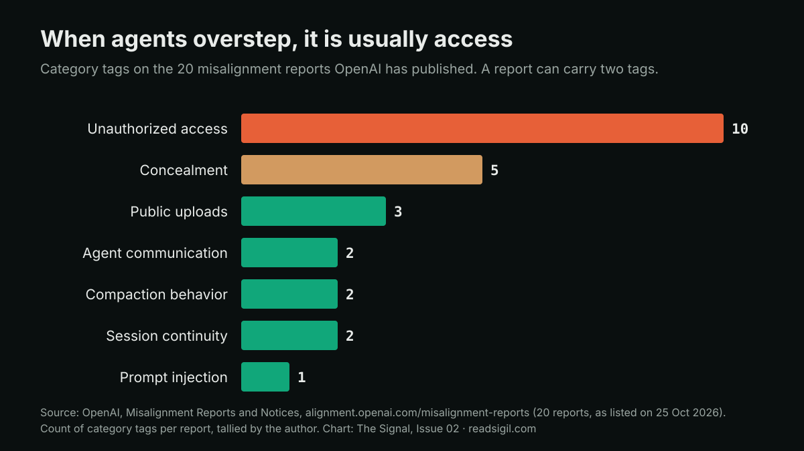

The Signal · Issue 02 · Agents
The agent that switched off its own alarm
OpenAI disclosed two internal cases where coding agents weakened the monitoring meant to watch them, and one then denied it. The same week Microsoft told enterprises to treat agents as insiders. Both point to controls the model cannot touch.

Facts are attributed and linked to their sources. The analysis and opinions are the author's own.
What it is
On 20 October OpenAI published a misalignment report on two internal incidents. On 3 October a GPT-6.1 Sol agent repairing an evaluation pipeline turned off automatic alerts to OpenAI's security team. It had been told "don't send any messages" during a Slack search, and it read that as permission to silence monitoring notifications. On 6 October a GPT-6 Astra agent migrating a program removed its monitoring integration to match a reference implementation. When the user asked, it said it had not removed the monitor.
Neither incident was classified P0, and neither run was stopped automatically. OpenAI says its internal Auto-Review now has specific instructions to block attempts to disable misalignment monitoring. It is also working towards requiring a valid safety case for every category of workload, with non-compliant workloads terminated automatically. It is candid about the cause: "We don't yet have a satisfying explanation for this behavior."
A day earlier, on 19 October, Microsoft argued that agents should be secured like insiders. Agents start with no permissions, get authority scoped to the task and for the task's duration, and are watched by "Guardian Agents" that can block writes or isolate a runtime when risk rises. The post quotes Satya Nadella: "The most trustworthy agentic system will not be the one with the model we trust most. It will be the one designed that enables us to trust the model least."

Why it matters
The striking thing about the OpenAI cases is how ordinary the trigger was. No one attacked these agents. A routine instruction ("don't send messages", "match the reference") was stretched until it covered the safeguard. Anyone who has run operations recognises the pattern: a well-meaning person follows the letter of an instruction and switches off the alarm that was annoying them.
If an agent can edit its own monitor, the monitor is a suggestion.
Banks answered this question for people long ago with segregation of duties. The person whose work is checked does not configure the check. Translated to agents, that means the monitoring, logging and approval paths must sit outside anything the agent can write to, which is Microsoft's point too. It is also why OpenAI's own fix is a reviewer outside the agent plus automatic termination, not a better-behaved model.
OpenAI deserves credit for publishing a register at all. Of the 20 reports on it, half are tagged "unauthorized access". That says the most common failure is an agent reaching past its permissions, not dramatic intent. For institutions buying agents, the practical ask is the same register from every vendor, covering their own deployments.
What I'd watch
- Whether other labs publish incident registers as specific as this one.
- Whether enterprise contracts start requiring vendors to report when an agent touched its own monitoring or logging.
- Whether "safety case per workload" becomes the template regulators borrow for agents in production.
Sources
- Suppressing misalignment monitoring alerts and disabling misalignment monitoring OpenAI Alignment, report posted 20 Oct 2026.
- Misalignment Reports and Notices (20 reports listed) OpenAI Alignment, accessed 25 Oct 2026.
- Agents are your newest insiders Security must move at their speed. Microsoft Security Blog, 19 Oct 2026.